ggplot2
Introduction to ggplot2
This is a follow-along guide for the slides in the presentation.
ggplot2
ggplot2 is an implementation of the Grammar of Graphics. It is not a guide on what makes a good graphic, but rather a philosophy of building statistical graphics. The grammar proposes components that are common to all statistical graphics:
data - what data are you trying to plot
mappings - what aesthic mapping are you trying to plot
- layers
- geometries - bars, lines, points, etc
- statistics - statistical summaries of the data (e.g. counts)
scales - map color, size, shape
coordinate systems - describe how the data are mapped
facets - breaking the data into subsets of small multiples
themes - the details of display like font size, color pallets, etc
Now for implementing the grammar with ggplot2
Let’s call the tidyverse which includes ggplot2.
library(tidyverse)## -- Attaching packages ---------------------------------- tidyverse 1.2.1 --## v ggplot2 3.1.0.9000 v purrr 0.2.5
## v tibble 1.4.2 v dplyr 0.7.7
## v tidyr 0.8.2 v stringr 1.3.1
## v readr 1.1.1 v forcats 0.3.0## -- Conflicts ------------------------------------- tidyverse_conflicts() --
## x dplyr::filter() masks stats::filter()
## x dplyr::lag() masks stats::lag()We’ll start with using the diamonds dataset that is built into ggplot21.
head(diamonds)This dataset contains information for a variety of diamonds which includes the 5 C’s and additional geometries.2
Our First Example
Data
Start with the data:
ggplot(diamonds)
Aesthetics
Note that we can pipe (%>%) into ggplot2. This can be handy when we need to do some data wrangling/ munging before we graph.
diamonds %>%
ggplot(aes(x = carat, y = price))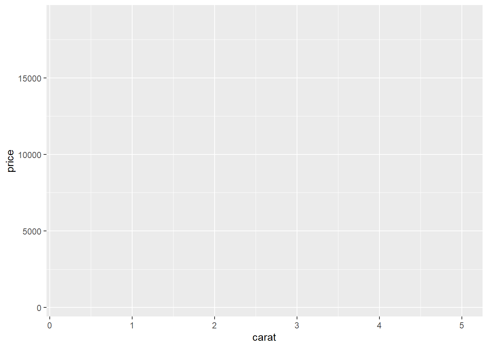
Aside
Note that we can specify aes outside of the ggplot2 object with something like
ggplot(mtcars)+
aes(x = mpg, y = cyl)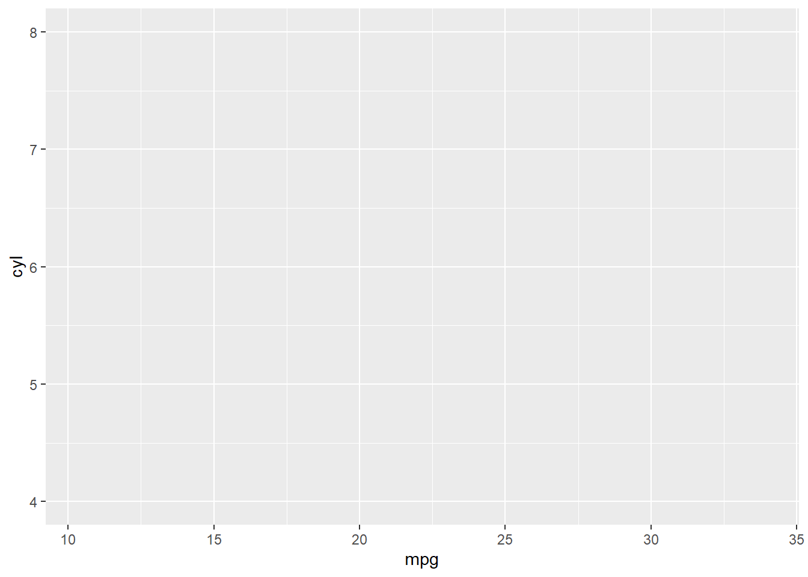
Layers
Geoms
Layers are the geoms and stats to which we can map out aesthetics. There are tons of options of which we cannot cover in this overview. See geoms and stats for more details.
Let’s make an x-y scatterplot with geom_point. Note that to add a component to a ggplot2 item we use the + operator. There is a long history about why this is the case but it is important to remember.
diamonds %>%
ggplot( aes(x = carat, y = price))+
geom_point()
And let’s change the transparency on the points given that we have a lot of overlap. This will help us see the density of our data.
diamonds %>%
ggplot( aes(x = carat, y = price))+
geom_point(alpha = 1/5)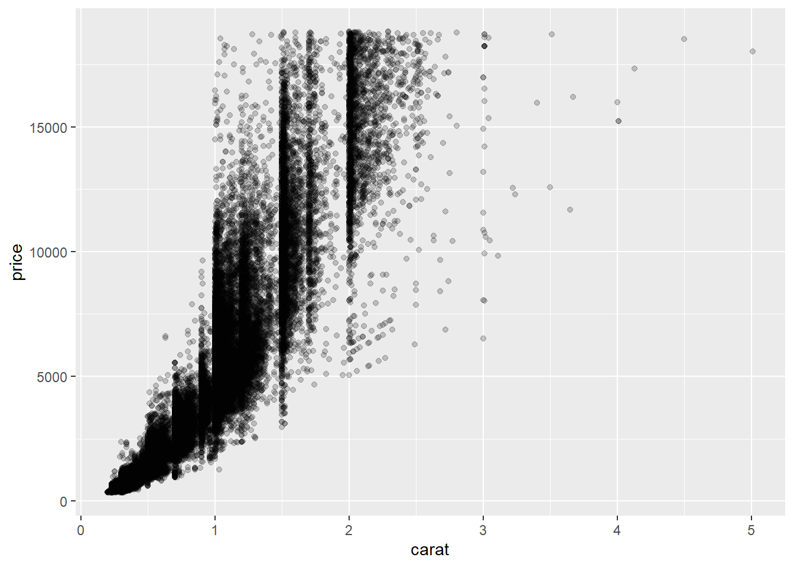
Stats
Now let’s add a linear regression line to the graph. For simplicity as well, let’s save it to an object called p. We can continue to add components to p without having to rewrite our code each time. This is a very handy feature that separates ggplot2 from the base plotting tools.
p <- diamonds %>%
ggplot( aes(x = carat, y = price))+
geom_point(alpha = 1/5)Scales
scale can help us to change the scales of our axes. Using these features we don’t have to change our data before plotting it. This is very nice when dealing with log scales or percents.
Let’s make the x and y axes on the log scale.
(p2 <- p+
scale_x_log10()+
scale_y_log10())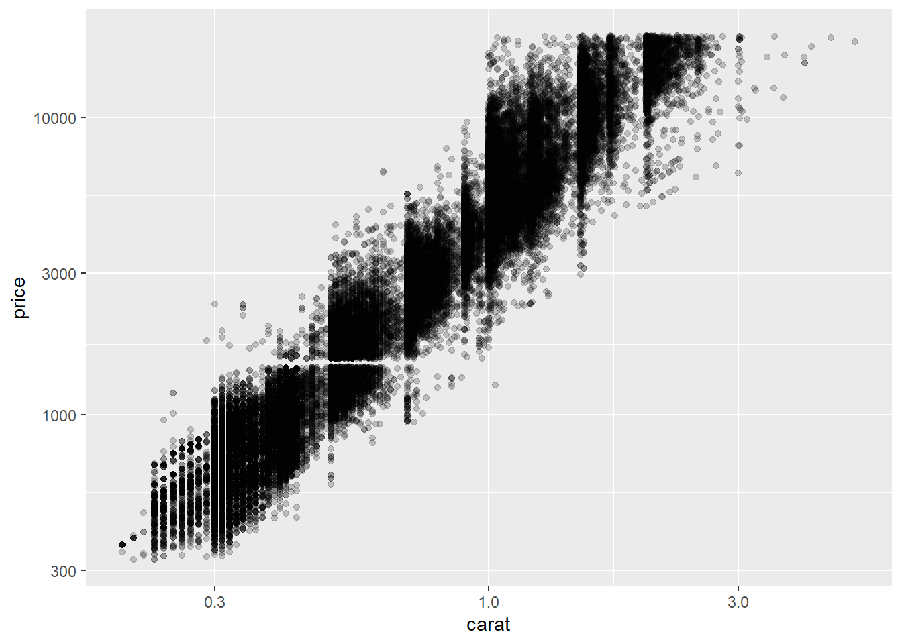
Facets
Now we add facets to our data. Facets create the “small multiple”3
(p3 <- p2+
facet_wrap(~cut))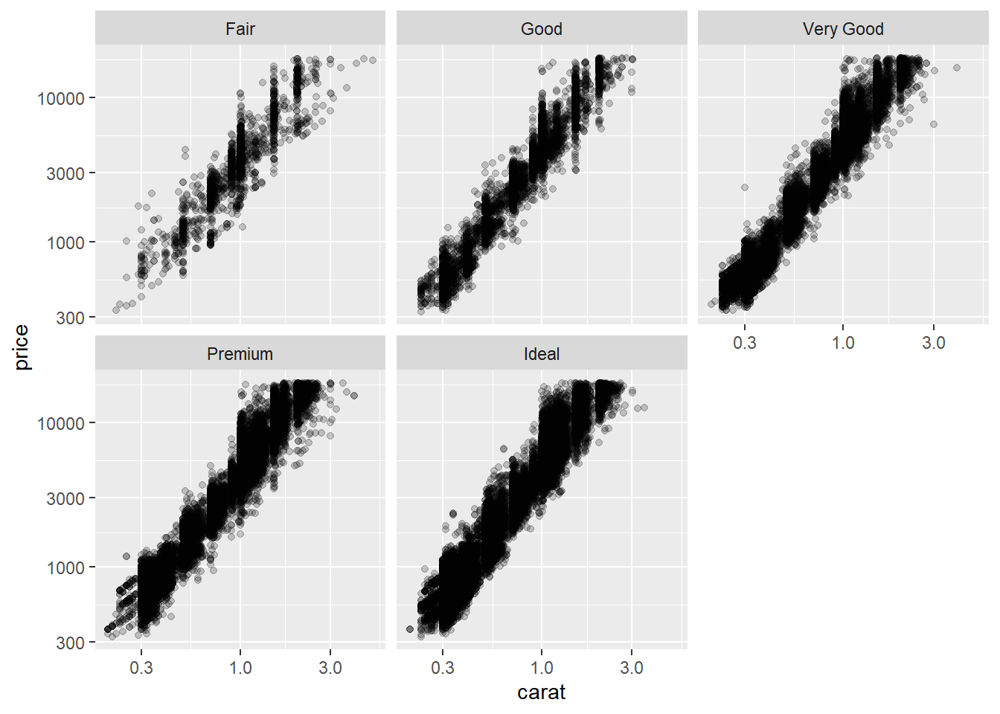
Theme Elements
First we need to add titles to our graph. We can do this with the labs function within ggplot2
(p4 <- p3+
labs(
title = "Diamond Price as a Function of Carat Size",
subtile = "Considering Diamond Cut",
caption= "Data: Diamonds Dataset"
))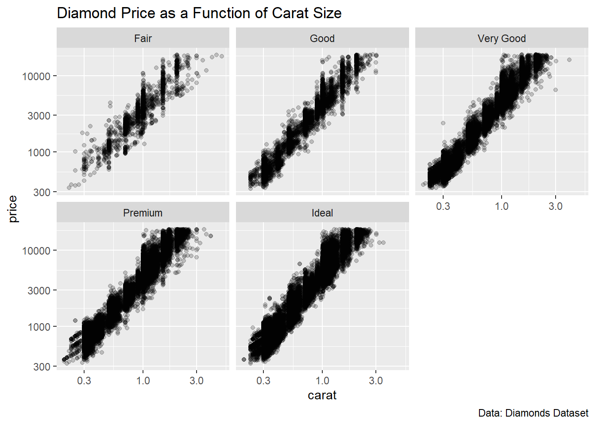
There are several built in “themes” that can be used to control some of the other graph details (background colours, grids, line colours, etc). We can add the defaults using theme_
p4+
theme_minimal()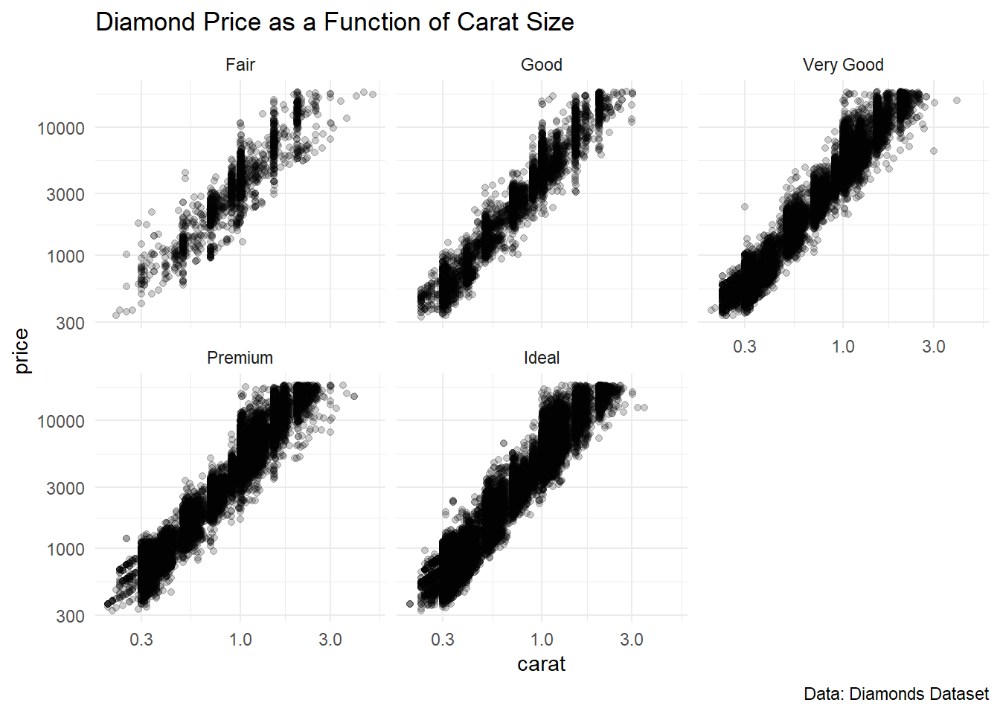
Additionally, others have made themes for us to use. For example ggthemes has many familiar templates. Additionally, papaja even has an theme_apa to make APA compliant graphs.
library(papaja)
p4+
theme_apa()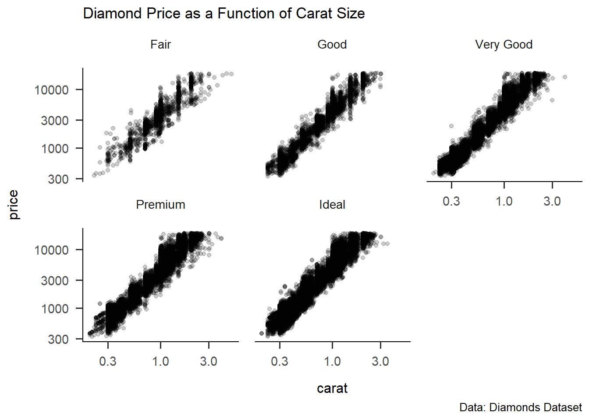
Or we can manipulate the theme directly through theme.
p4+
theme(panel.grid = element_blank(),
plot.title = element_text(size = 20, color = "blue"))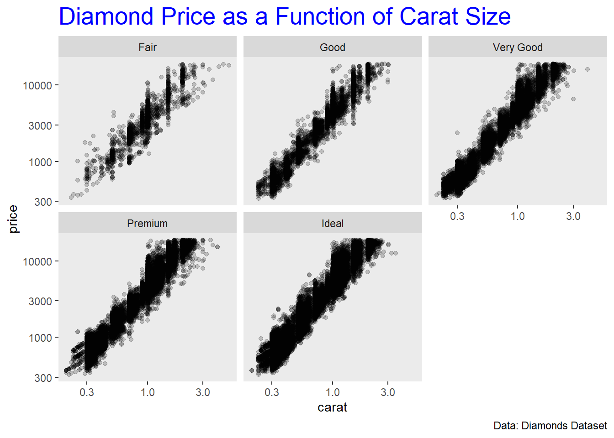
And We Can Keep Iterating!
Now we can add another aesthetic element, colouring by a feature of our dataset and everything works!
p4 +
aes(color = clarity)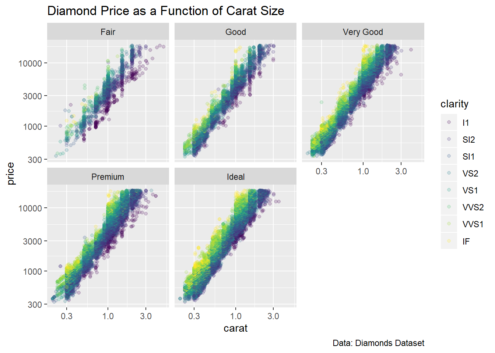
Saving
ggsave can be used to save the ggplot2 object.
p4 +
aes(color = clarity)+
ggsave("outputs/diamonds_plot.pdf")A Second Examples
Let’s do some additional analysis with our General Social Survey Data Set.
library(haven)
url <- "http://users.wfu.edu/dewittme/data/sample/GSS2016.sav"
# Read Raw Data
raw_data <-read_spss(url)I want to subset the data
library(labelled)
my_subset <- raw_data %>%
select(MAR1, AGE, WORKHARD, YEAR) %>%
mutate_at(vars(MAR1, WORKHARD), labelled::to_factor)Let’s Visualise a few things in our data
(p1 <- my_subset %>%
ggplot(aes(MAR1))+
geom_bar(fill = "#9E7E38")+
labs(
title = "Marital Status for Person 1",
caption = "Data: General Social Survey",
x = NULL
)+
theme_minimal())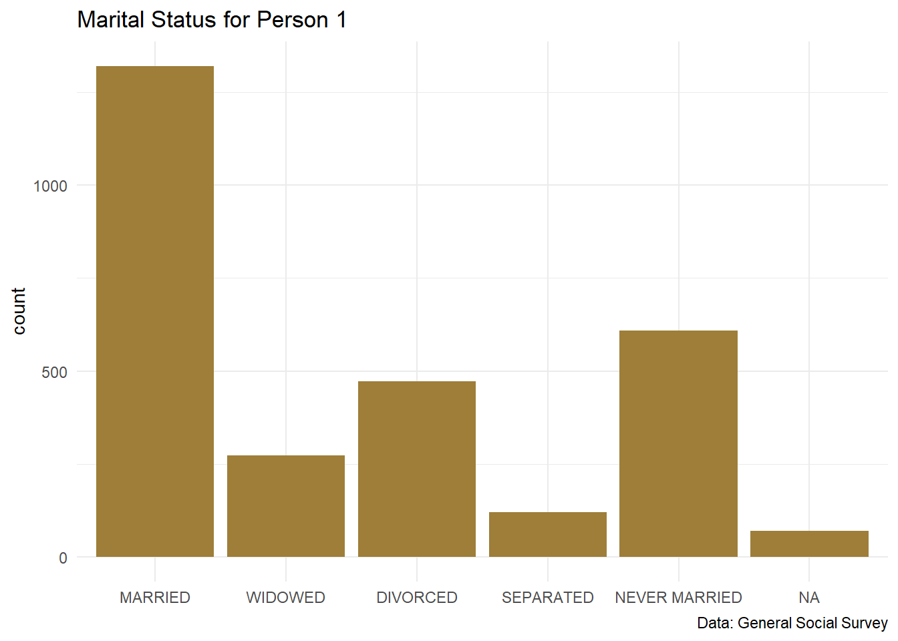
Now let’s look at data groups
(p2 <- my_subset %>%
mutate(WORKHARD_num = as.numeric(WORKHARD)) %>%
ggplot(aes(MAR1, WORKHARD_num))+
stat_summary(fun.data = "mean_cl_boot")+
labs(
title = "Mean Response for Working Hard",
subtitle = "With Boostrapped CIs",
caption = "Data: GSS",
x = NULL,
y = "Opinion of Hard Work (1-5)"
)+
theme_minimal())## Warning: Removed 933 rows containing non-finite values (stat_summary).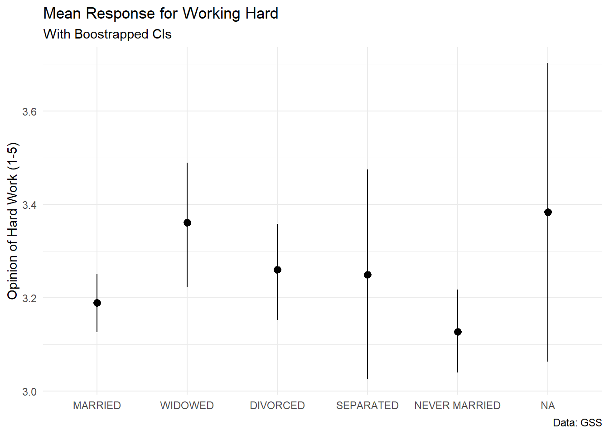
Now we can put these plots together using cowplot
library(cowplot)##
## Attaching package: 'cowplot'## The following object is masked from 'package:ggplot2':
##
## ggsaveplot_grid(p1, p2, labels = c("A", "B"), nrow = 2)## Warning: Removed 933 rows containing non-finite values (stat_summary).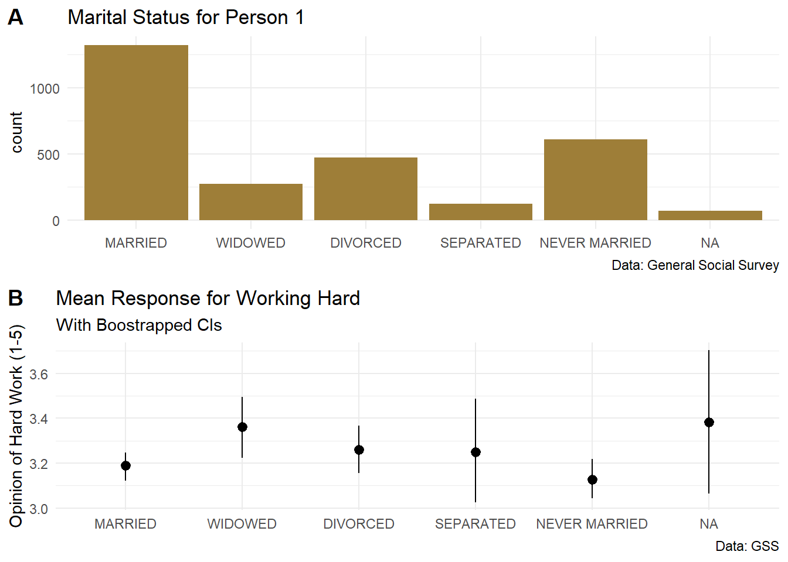
Or if you wanted to get more fancy
ggdraw() +
draw_plot(p1 +
theme(legend.justification = "bottom"),
0, 0, 1, 1) +
draw_plot(p2 + theme(legend.justification = "top"),
0.4, 0.52, 0.6, 0.4)## Warning: Removed 933 rows containing non-finite values (stat_summary).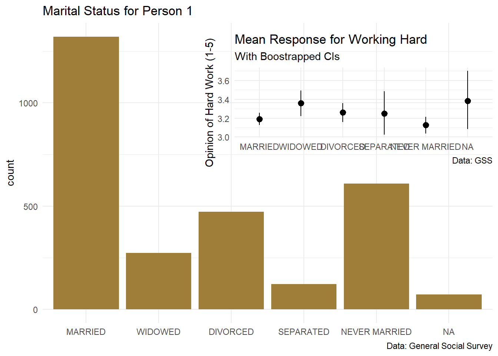
There is much more documentation on this package here
Find more about this dataset using help(“diamonds”).↩
See more about the five cees↩
See this link for more details. We can use the
facet_to add these facets.↩
Introduction to R
dewittme.wfu.edu
Office of Institutional Research
309 Reynolda Hall
Winston- Salem, NC, 27106
Copyright © 2018 Michael DeWitt. All rights reserved.